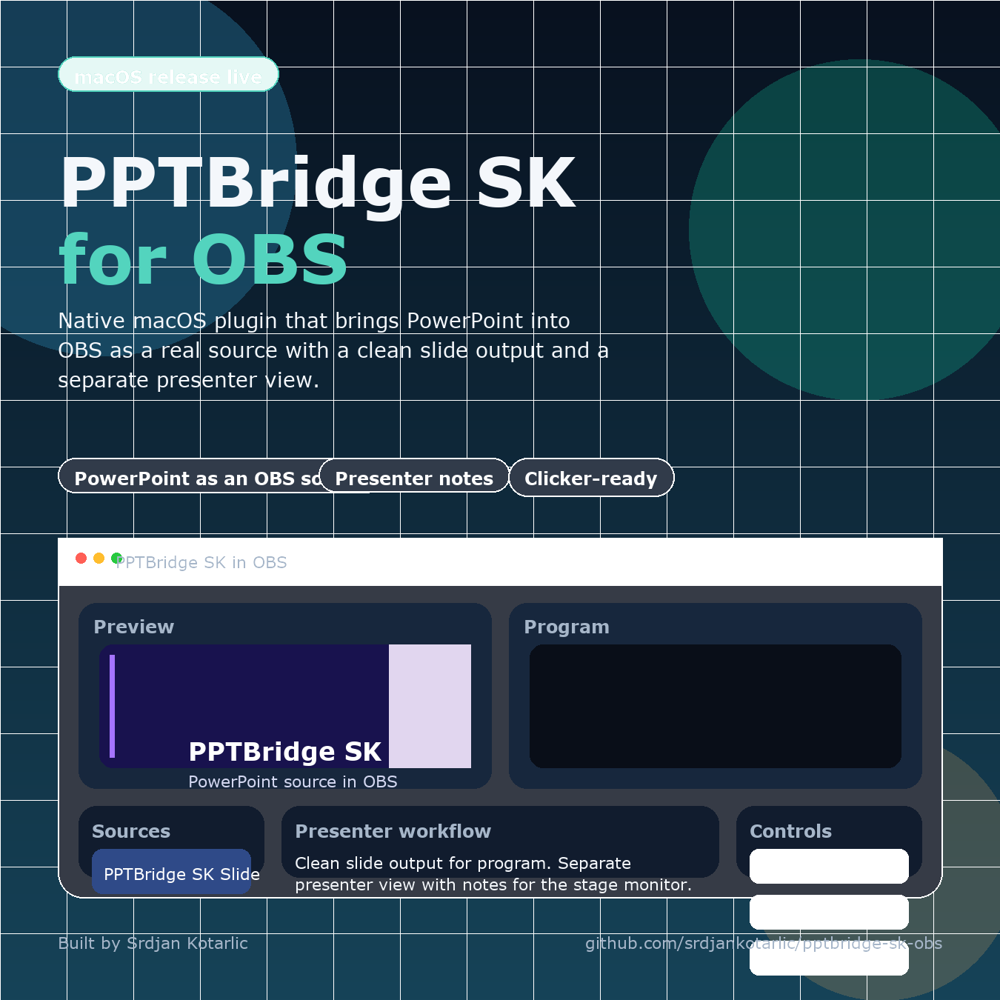

Single-computer workflow
Use PowerPoint in OBS without display capture or a second computer
PPTBridge turns the deck into an OBS source. Your desktop remains available for OBS, a browser, or show-control software while the audience sees only the slide.

The basic signal path
- Add PPTBridge SK Slide to the scene that goes to Program.
- Select the deck file in source properties.
- Scale or crop the source exactly like any other OBS source.
- Use the PPTBridge hotkeys, clicker capture, Companion, or OSC to navigate.
For a PDF, PPTBridge renders the pages directly. For a PowerPoint file, static preview loads first; start PowerPoint Live Mode when you need builds, animation, embedded video, or audio.
Why this is safer than a desktop capture
- The taskbar, mouse, notifications, and other apps are not part of the source.
- The source remains in the OBS scene even if you work in Chrome or another application.
- The default resize behavior keeps the OBS output dimensions stable when the PowerPoint window changes.
- With multiple decks, controls follow the PPTBridge source in the current Program scene.
One important limit: PowerPoint Live Mode still uses the desktop PowerPoint application behind the scenes. PPTBridge controls and captures it for OBS; it does not reimplement the PowerPoint animation engine.
Keyboard and clicker behavior
Normal left/right arrows stay available for other work. Default focused OBS hotkeys are 2 for Next and 1 for Previous. For a stage clicker that must work while another app has focus, enable Spotlight/Clicker Capture and use its PageDown/PageUp input.
Rehearsal checklist
- Confirm the deck is in the intended Program scene.
- Test every animation, video, and audio cue in live mode.
- Resize the PowerPoint desktop window and verify Program stays stable.
- Test another application in focus while the stage clicker advances slides.
- Run the final-slide protection test.
Using PDF instead? Set up direct PDF slides and a confidence view.